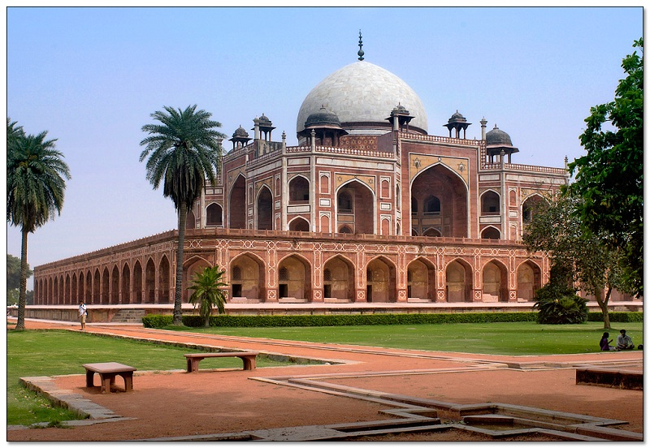

Located near the crossing of Mathura road and Lodhi road, this magnificent garden tomb is the first substantial example of Mughal architecture in India.
It was built in 1565 A.D. nine years after the death of Humayun, by his senior widow Bega Begam. Inside the walled enclosure the most notable features are the garden squares (chaharbagh) with pathways water channels, centrally located well proportional mausoleum topped by double dome. There are several graves of Mughal rulers located inside the walled enclosure and from here in 1857 A.D; Lieutenant Hudson had captured the last Mughal emperor Bahadur Shah II.